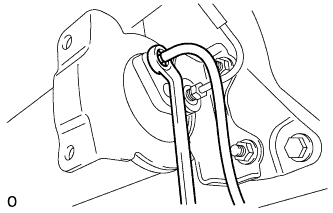
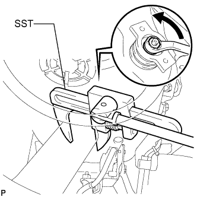
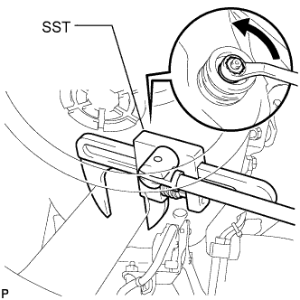

REAR SHOCK ABSORBER > REMOVAL |
| 1. REMOVE STABILIZER CONTROL VALVE PROTECTOR (w/ KDSS) |
 |
Detach the clamp, and disconnect the connector from the protector.
Remove the 3 bolts and protector.
| 2. OPEN STABILIZER CONTROL WITH ACCUMULATOR HOUSING SHUTTER VALVE (w/ KDSS) |
Using a 5 mm hexagon socket wrench, loosen the lower and upper chamber shutter valves of the stabilizer control with accumulator housing 2.0 to 3.5 turns.

| 3. REMOVE REAR WHEEL |
| 4. DISCONNECT NO. 3 PARKING BRAKE CABLE ASSEMBLY |
Remove the bolt and disconnect the No. 3 parking brake cable.
| 5. DISCONNECT NO. 2 PARKING BRAKE CABLE ASSEMBLY |
Remove the bolt and disconnect the No. 2 parking brake cable.
| 6. DISCONNECT REAR AXLE BREATHER HOSE SUB-ASSEMBLY |
 |
Disconnect the rear axle breather hose from the rear axle housing assembly.
| 7. DISCHARGE SUSPENSION FLUID PRESSURE (w/ Active Height Control) |
 |
Connect a hose to the bleeder plug for the height control accumulator and loosen the bleeder plug.
Discharge the suspension fluid pressure.
After the fluid pressure has dropped and oil has drained out, tighten the bleeder plug and remove the hose.
| 8. SUPPORT REAR AXLE HOUSING ASSEMBLY |
 |
Support the rear axle housing with a jack using a wooden block to avoid damage.
| 9. DISCONNECT REAR LATERAL CONTROL ROD ASSEMBLY |
 |
Remove the bolt and nut, and disconnect the rear lateral control rod from the frame.
| 10. DISCONNECT REAR SHOCK ABSORBER ASSEMBLY RH |
 |
Remove the bolt on the lower side of the shock absorber.
Disconnect the shock absorber from the axle housing.
| 11. DISCONNECT NO. 4 SUSPENSION CONTROL PRESSURE HOSE (w/ Active Height Control) |
 |
Remove the 2 bolts and disconnect the pressure hose from the shock absorber.
| 12. REMOVE REAR SHOCK ABSORBER ASSEMBLY LH (w/ Active Height Control) |
 |
Remove the bolt on the lower side of the shock absorber.
 |
Using SST, hold the rear shock absorber in place.
Remove the nut, upper bracket and shock absorber assembly.
Remove the lower bracket from the shock absorber.
| 13. REMOVE REAR SHOCK ABSORBER ASSEMBLY LH (w/o Active Height Control) |
|
Remove the bolt on the lower side of the shock absorber.
 |
Using SST, hold the rear shock absorber in place.
Remove the nut, upper bracket and shock absorber assembly.
Remove the lower bracket from the shock absorber.